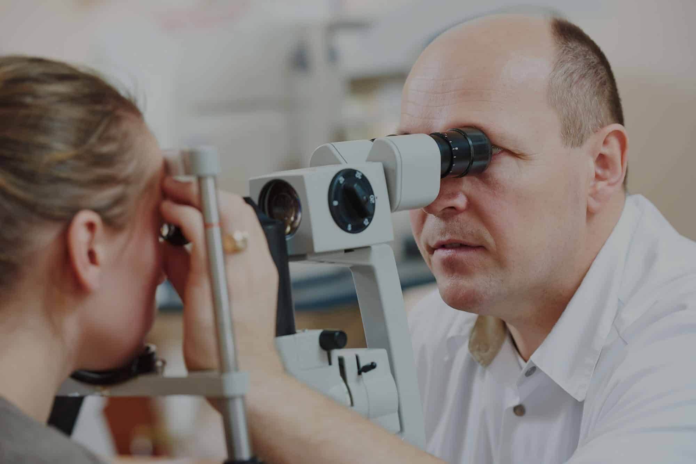
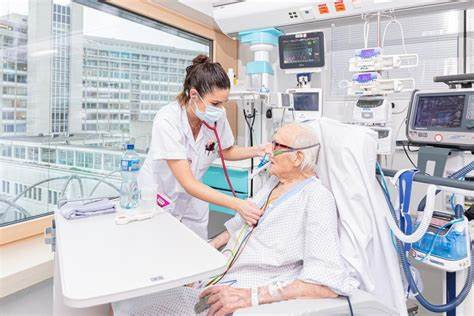
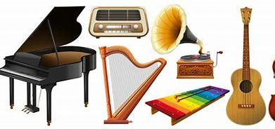

horaire
Acceuil
Kb2
Professions
Galerie
Sujet
SOURCES DES IMAGES
Lien vers Médicament
Lien vers Ambulance
Lien vers Urgence-pharmacie

Lien vers medecin speciliste

Lien vers Méedecin interne

Lien vers Médecin
Lien vers Médecin
Lien vers Stétoscope